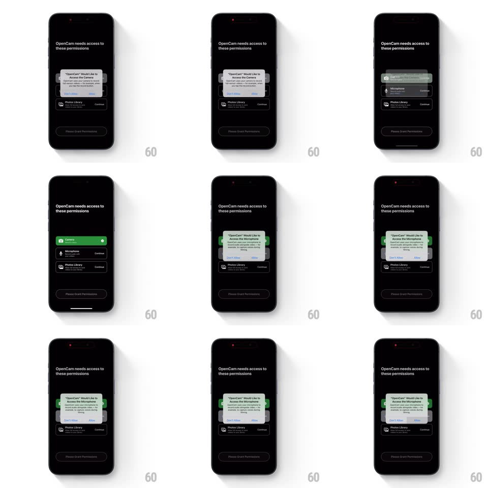

Media
Frame-by-frame

Rebuild this interaction 1:1: OpenCam's permission primer - as each system dialog is approved, its list row floods green with a check and the flow advances to the next permission.

Rebuild this interaction 1:1: OpenCam's permission primer - as each system dialog is approved, its list row floods green with a check and the flow advances to the next permission. ## Integration Integration: stack-agnostic spec - springs given as stiffness/damping, timed motions as duration + curve; map every value to your framework and animation library of choice. ## Scene Black screen "OpenCam needs access to these permissions": three rows (Camera, Microphone, Photos Library - icon, name, subcopy, "Continue" right-aligned), a disabled "Please Grant Permissions" pill at the bottom, and the red recording indicator in the status bar. ## Motion spec Pattern: sequential permission success states. - Prompt: the iOS system dialog pops (scale 0.9 -> 1 with fade, spring ~420/18) centered over the dimmed list. - Approve: on "Allow" the dialog dismisses (scale down + fade, 200ms) and the approved row floods green edge-to-edge (color wipe left-to-right, 300ms, ease-out) as a white check circle pops in (spring ~440/18, 200ms) replacing "Continue". - Advance: the next row's "Continue" brightens (opacity 0.5 -> 1, 200ms) and after a 300ms beat its system dialog pops. - Complete: with all rows green, the bottom pill becomes enabled (fade + slight rise, 250ms). ## Calibration - Only the approved row changes; pending rows stay dark. - The green wipe is a fill from the left edge, not a whole-row fade. ## Reduced motion Rows fade to green without the wipe. ## Don't miss - The system dialogs are modal pauses - the list never animates behind them. - The check replaces the "Continue" text in place.